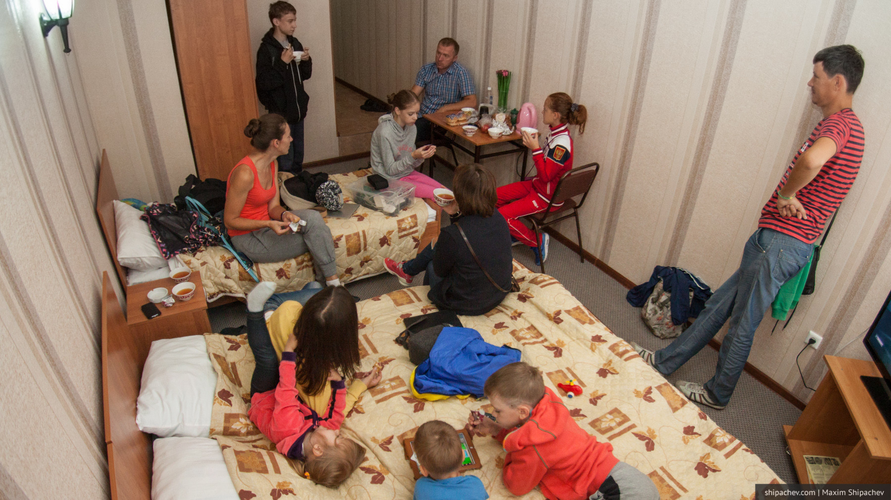

Из Кемерова выехали рано утром, поехали через Алтайский край и Рубцовск. Решили уже на месте определиться, пересекать ли границу в тот же день, или переночевать в России.
Если добираемся до границы днём, пересекаем её и ночуем в Семее. Так теперь называют Семипалатинск.
В итоге в Рубцовск приезжаем в середине дня и обедаем в кафе «Любо-дорого». Любо, и по деньгам не очень-то и дорого. Кафе расположено, как понимаю, на главной площади Рубцовска, сам Рубцовск в воскресенье пуст.
На пограничном переходе «Веселоярск» мы оказываемся уже около 2 часов дня.
Чтобы перемещаться по автомобильным дорогам Казахстана необходимо иметь полис ОСАГО. Купить его можно прямо на границе. Стоимость полиса на 5 дней (по сути транзитного) — 180 рублей.
Машин на границе немного, перед нами в очереди стояло две, пересекаем границу примерно за час.
Казахстан встречает 95-м бензином по 1.19 тенге. В рублях выходит 38 рублей за литр.
По правилам дорожного движения, действующим в Казахстане, на участках дорого вне населённых пунктов действует ограничение скорости в 110 км/ч. Отсюда непривычные нам знаки ограничения в 90 км/ч на отдельных участках.
Около 6 часов вечера добираемся до Семипалатинска. Впрочем, никакого ощущения, что уехали из России нет.
На ночлег останавливаемся в гостинице . Стоимость трёхместного номера на половину суток — 1820 рублей.

В Семее до нашего приезда долго стояла сильная жара до 46°. Местные говорят, то люди даже теряли на улицах сознание. Жара сменилась похолоданием и штормовым ветром вперемешку с песком.
Идею прогулки по городу отметаем (вернее её сдувает ветер). Решаем просто прокатиться на машинах.
В целом, Семей напоминает каждый российский провинциальный город уровня Анжеро-Судженска. Есть администрация, есть гостиница «Европа», есть магазин «Кристалл» на первом этаже.
Прокатились по подвесному мосту через р. Иртыш. Мост построен относительно недавно, в 2001 году. Длина основного пролёта моста 750 метров. Интересно, то на период строительства через Иртыш устанавливали понтонный мост, потом его убрали и сейчас асфальтированная дорога просто упирается в реку. А до 1965 года на этом месте был даже разводной мост.
Туда мы тоже съездили.